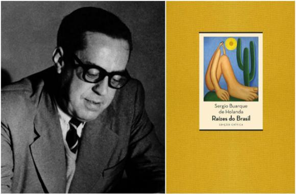

Raízes do Brasil
Na obra Raízes do Brasil do autor Sérgio Buarque de Holanda, que foi um historiador, sociólogo e escritor brasileiro. Apresenta-se em sua obra que os homens que hoje estão próximos ou já passaram dos cinquenta anos desenvolveram um profundo interesse em compreender o Brasil, especialmente em relação ao seu passado, tendo sido influenciados por três obras fundamentais: Casa-Grande e Senzala de Gilberto Freyre, que encontraram durante o período escolar; Raízes do Brasil de Sérgio Buarque de Holanda, que marcou sua fase de estudos complementares; e Formação do Brasil Contemporâneo de Caio Prado Júnior, relevante durante o período universitário. Esses livros são considerados chaves por refletirem a mentalidade caracterizada pelo fervor intelectual e análise social que surgiu após a Revolução de 1930 e que, apesar das dificuldades impostas pelo Estado Novo, continuou a influenciar seu pensamento.
O livro é dividido em capítulos que abordam diferentes temas, como o sistema de capitanias hereditárias, a colonização portuguesa, o papel do trabalho escravo, a relação entre a cidade e o campo, a formação da elite brasileira, entre outros. Sérgio Buarque de Holanda analisa como fatores como o patrimonialismo, o personalismo, a falta de uma mentalidade cívica e a predominância do homem cordial contribuíram para a formação da sociedade brasileira.
Um conceito importante apresentado no livro é o "homem cordial", que descreve a tendência do brasileiro em agir de forma afetiva e emocional nas relações sociais, muitas vezes sobrepondo os laços pessoais aos princípios racionais e impessoais. Em Raízes do Brasil, o autor faz uma análise crítica da formação social brasileira, apontando desafios e peculiaridades que têm impacto no desenvolvimento do país. A obra é conhecida por seu estilo erudito e reflexivo, além de propor uma interpretação original da história brasileira.
Sérgio Buarque de Holanda influenciou significativamente o pensamento histórico e sociológico no Brasil, e Raízes do Brasil continua sendo uma leitura importante para quem deseja entender as raízes e a identidade da sociedade brasileira. Sua abordagem crítica e suas reflexões sobre a cultura e a formação social brasileira tornaram a obra um marco na historiografia nacional.
O livro Casa-Grande e Senzala destaca-se por sua abordagem ousada, explorando abertamente a vida sexual no contexto patriarcal e enfatizando o papel crucial dos escravos na formação da identidade brasileira mais profunda. Para os leitores daquela época, a força revolucionária e o impacto libertador da obra foram marcantes, embora hoje possam ser difíceis de compreender, considerando os rumos posteriores tomados pelo autor. A riqueza de informações apresentadas fruta de uma técnica expositiva inovadora, permitiu que novas ideias surgissem como uma brilhante improvisação, introduzindo perspectivas totalmente novas naquele Brasil da época.
Assim, Casa-Grande e Senzala atuaram como uma ponte entre as interpretações naturalistas dos estudiosos anteriores da sociedade brasileira, como Sílvio Romero, Euclides da Cunha e até Oliveira Viana, e os pontos de vista mais especificamente sociológicos que ganharam destaque a partir de 1940. O autor demonstrou preocupação com questões de cunho biológico, como raça, aspectos sexuais da vida familiar, equilíbrio ecológico e alimentação, utilizando uma abordagem inspirada na antropologia cultural norte-americana, que ganhou reconhecimento em nosso país.
Por outro lado, Raízes do Brasil, lançado três anos depois, adotou uma abordagem completamente diferente. Sendo um livro curto e contido, com poucas citações, pode não ter cativado tanto a imaginação dos leitores daquela geração. No entanto, sua qualidade excepcional fez com que se tornasse um clássico imediatamente. A obra oferecia importantes insights para a compreensão das posições políticas dominantes naquele momento, caracterizado pela descrença no liberalismo tradicional e pela busca de novas soluções, tanto à direita, representada pelo integralismo, quanto à esquerda, pelo socialismo e comunismo.
O autor adotava uma aparente postura desapegada e distante, mas na verdade estava profundamente influenciado pelas tensões contemporâneas, e sua análise do passado visava a melhor compreensão do presente. Seu embasamento teórico vinculava-se à nova história social francesa, à sociologia da cultura alemã e a elementos teóricos sociológicos e etnológicos inéditos no Brasil. O tom geral do livro era marcado por uma elegância cuidadosa e rigor de composição, que, apesar das digressões ocasionais, de alguma forma remetia a Simmel, parecendo um contraponto à prolixidade nacional.
Em resumo, essas três obras foram fundamentais para a formação intelectual dos homens desta geração, moldando sua visão sobre o Brasil por meio de diversas perspectivas históricas e sociais. Cada livro contribuiu de maneira única, seja pela ousadia e originalidade de Casa-Grande e Senzala, seja pela profundidade analítica e relevância de Raízes do Brasil. Juntas, essas obras influenciaram uma geração de pensadores, conectando o passado ao presente e enriquecendo a compreensão da sociedade brasileira.
Buarque, com essa obra inovadora que busca mostrar a busca da identidade nacional. No primeiro capítulo da obra ele retrata os países ibéricos, onde o autor apresenta que havia uma igualdade entre os homens e que aparentemente a anarquia ibérica era mais justa e correta do que a hierarquia feudal, pois não tinha muito privilégio. Onde retrata que o Brasil teve muitas as características ibéricas e sua construção veio daqui.
No segundo capítulo, Trabalho e Aventura, onde discorre sobre a economia escravista, manifesta-se que a própria língua portuguesa era mais fácil para os povos originários, o que ajudou muito na colonização. Outro elemento exposto que facilitou a comunicação no Brasil foi a Igreja Católica que tinha uma forma mais simpática de comunicar do que as igrejas protestantes. Além disso, Buarque finaliza manifestando que o resultado de tudo foi a mestiçagem que possibilitou a construção de uma nova pátria.
No terceiro capítulo, Herança Cultural, onde mostra-se que a organização social têm raízes do âmbito rural que influencia até os dias atuais a sociedade brasileira. Com isso, o autor comenta sobre a mentalidade escravocrata e imprevista que impediu a industrialização do Brasil, por volta do século XIX. É muito difícil para o latifundiário abandonar a mentalidade do dinheiro fácil e se dedicar a atividades industriais que exigem esforço, habilidade e prazos longos. Assim, concluem os autores, a escravidão só foi abolida no Brasil em 1888, e não foi surpresa que o modo de vida rural invadiu as cidades. A mentalidade de casa-grande invadiu as cidades e conquistou todas as profissões, sem exclusão das mais humildes.
Desenvolvido por Ana Júlia Stradioto Melo e Renata Torres Francisco
Curso Técnico em Informática para Internet
IFMS Campus Dourados
09 de Ago. de 2023